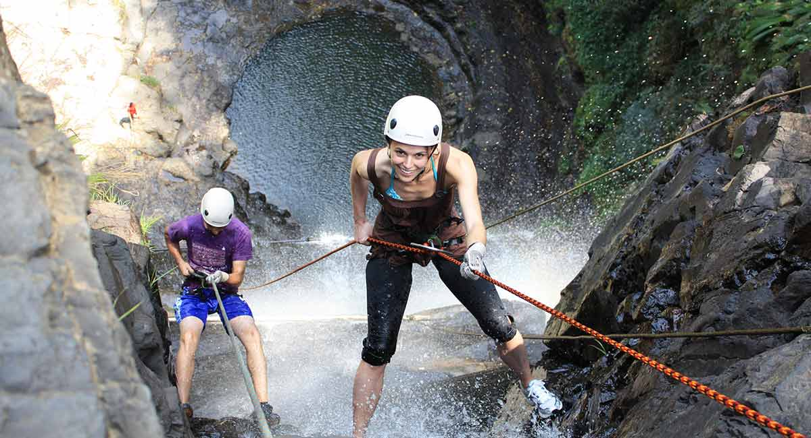

San Gil es el municipio pionero de los deportes extremos y de aventura en Colombia, pues en 1996 inició la oferta comercial y turística del rafting, siendo en este momento los únicos en el país que ofrecen este tipo de pasatiempo, y al pasar del tiempo ha ido aumentando la oferta con otros deportes y actividades extremas como parapente y espeleología. Es reconocida como «Epicentro Turístico» y «Capital Turística de Santander», pues aquí se pueden practicar diversos deportes extremos y de aventura como el descenso de río, canotaje-balsismo, el torrentismo, el parapente, la espeleología, rápel, cañonismo, salto bungee, ciclismo de montaña y el motocross, entre otros. Parapente San Gil9 Cuenta con las dotaciones de la naturaleza en espacios como cascadas, ríos, cavernas naturales, montañas y el gran cañón del Chicamocha ubicado a tan solo una hora de San Gil.
